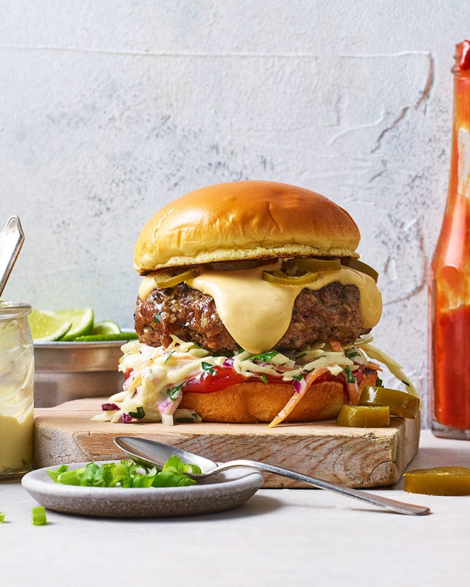

Give homemade burgers a Tex-Mex twist in this easy recipe. Serve spicy beef patties (made using our ultimate beef burger recipe) with a zesty slaw, jalapeños and a rich cheese sauce.
Hankering after more big Tex-Mex flavours? You’ll love our Tex-Mex enchilada bake recipe.
Ingredients
½ portion delicious. ultimate beef burgers
Veg oil for brushing
2 tbsp fajita seasoning
½ small white cabbage, finely shredded
2 medium carrots, peeled and grated
1 bunch coriander, roughly chopped (about 30g)
1 small red onion, finely chopped
3 tbsp mayonnaise
Grated zest and juice 1 lime
4 burger buns, toasted
Tomato ketchup and pickled jalapeños to serve
For the cheese sauce
250-300ml evaporated milk
1 tbsp cornflour
200g sharp cheddar or a mixture of cheddar and monterey jack, coarsely grated
1 tsp chilli powder (we used smoky chipotle chilli powder)
½ tsp garlic powder
½ tsp onion powder
You'll also need
Griddle pan, barbecue or heavy-bottomed frying pan
Method
For the cheese sauce, whisk together 250ml evaporated milk and the corn flour in a saucepan. Put over a medium heat and bring it to the boil (whisking all the time), then simmer for 3 minutes. Remove from the heat and stir in the cheese, chilli powder, garlic and onion powders, and a pinch of salt. If the cheese isn’t fully melted, gently warm over a low heat until silky smooth. Adjust the thickness with a little more evaporated milk if needed. Keep warm until ready to serve.
Heat a ridged griddle pan, heavy-bottomed frying pan or prepare a barbecue for high direct heat. Brush the burgers with oil and sprinkle with the fajita seasoning. Cook for 6-8 minutes until cooked through and well browned.
While the burgers are cooking, toss together the cabbage, carrot, coriander, onion, mayo and lime zest and juice in a bowl. Season with salt and a little pepper.
Spread the burger buns with a dollop of ketchup, then pile on the slaw. Top each bun with a cooked burger patty then pour over a generous helping of the cheese sauce. Finish with a few slices of pickled jalapeño and pop the bun lid on. Serve immediately.